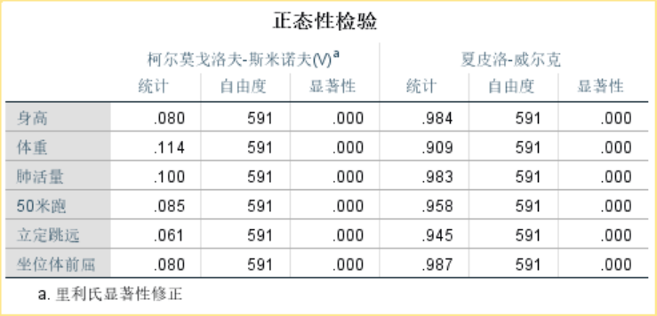
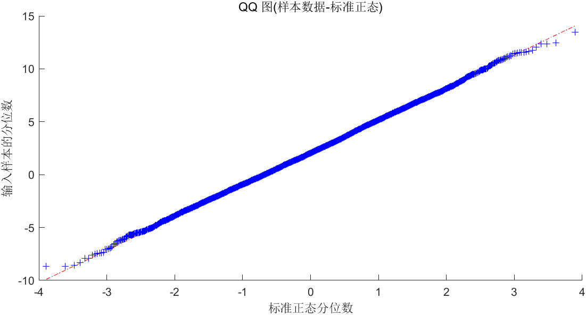

对数据进行正态分布检验
雅克-贝拉检验（Jarque-Bera Test）
- 此检验要求样本量
对于一个随机变量
^ Tips：正态分布的偏度为
可以证明，如果
假设检验步骤
设：
- 原假设
- 备择假设
然后计算该变量的偏度和峰度，得到检验值
将
补充：偏度和峰度
偏度：
定义：
图像：

峰度
定义：
图像：

代码实现
x
1x = normrnd(2, 3, 100, 1)2% 👆生成 100*1 的随机向量，每个元素是均值为 2，标准差为 3 的的正态分布3skewness(x) % 偏度4kurtosis(x) % 峰度MATLAB 检验结果
在 MATLAB 种进行
[h, p] = jbtest(x, alpha)
^ 其中
xxxxxxxxxx1171load 'physical fitness test.mat' % 加载 Test 变量，作为女生体测数据2size(Test); % 519 63
4% 通过循环进行 JB 检验5% 先获取列数6r_num = size(Test, 2); % 6，因为获取的是 519 6 的第二个数字7% 创建 H，P 数组保存数据8H = zeros(1, r_num);9P = zeros(1, r_num);10% 进行循环11for i = 1 : r_num12 [h, p] = jbtest(Test(:, i), 0.05);13 H(i) = h;14 P(i) = p;15end16disp(H)17disp(P)xxxxxxxxxx11 1 1 1 1 1 12
3 0.0110 0.0010 0.0136 0.0010 0.0010 0.0393可以发现，全都拒绝原假设，即我们有
夏皮洛-威尔克检验（Shapiro-wilk Test）
- 与
同上
- 原假设
- 备择假设
计算出威尔克统计量之后，得到相应的
Tips：MATLAB不能直接计算这个检验，所以在此使用 SPSS 26 进行操作
选择 分析——描述统计——探索：

将变量添加到右边，并点击 图：

在对话框中勾选 含检验的正泰图：

点击 继续——确定，得到如下结果：

可以直接看到 夏皮洛-威尔克检验的值
Q-Q 图
在统计学中， Q-Q 图（Q 代表分位数 Quantile）是一种通过比较两个概率分布的分位数对这两个概率分布进行比较的概率图方法
首先选定分位数的对应概率区间集合，在此概率区间上，点
这里，我们选择正太分布和要检验的随机变量，对其作出 Q-Q 图，则显然，如果要检验的随机变量完全符合正态分布，则其图线为一条直线
所以我们得到：
- 要利用 Q-Q 图鉴别样本数据是否近乎于正态分布，只需看 Q-Q 图上的点是否近似的在一条直线附近
Q-Q 图的绘制
在 MATLAB 中，直接使用 qqplot 进行绘制即可
x
1% 自己生成的数据进行绘制2x = normrnd(2, 3, 10000, 1);3qqplot(x)
一些问题
请看如下小样本时的 Q-Q 图绘制情况：
xxxxxxxxxx11% 自己生成的数据进行绘制，样本数为 252x = normrnd(2, 3, 25, 1);3qqplot(x)

^ 可以看到，效果并不好
所以在样本量较少的时候，不建议使用 Q-Q 图
总结
在实际使用过程中，我们优先选择两种检验，Q-Q 图看情况选择，如果拟合出的直线效果非常好，则可以考虑放入论文中进行使用